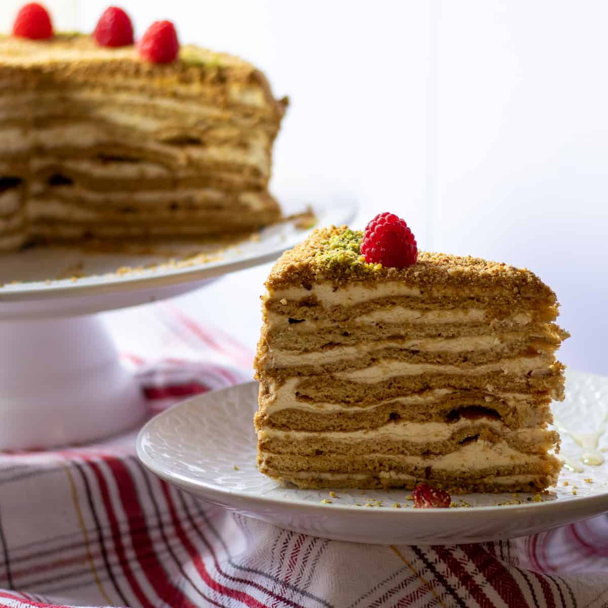

Medovik is a popular Russian layered honey cake consisting of honey-infused, almost biscuit-like sponges that are coated with thin layers of cream. Although there are numerous variations of the cake, the custard is usually prepared with whipped cream or various combinations of condensed milk and butter.
Meal prep time : 3 hours 30 minutes
Servings : 16